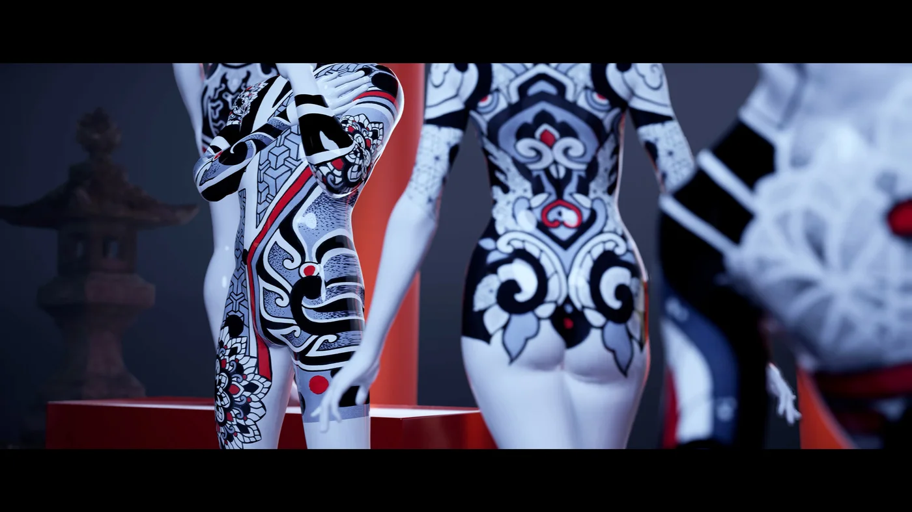
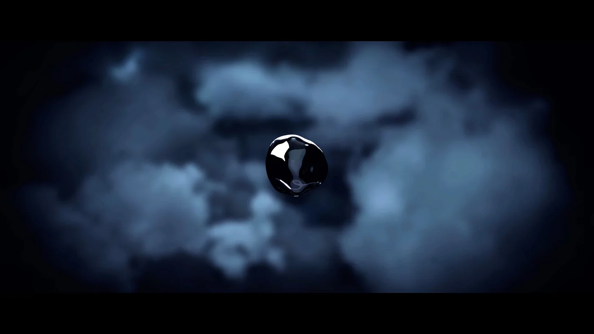
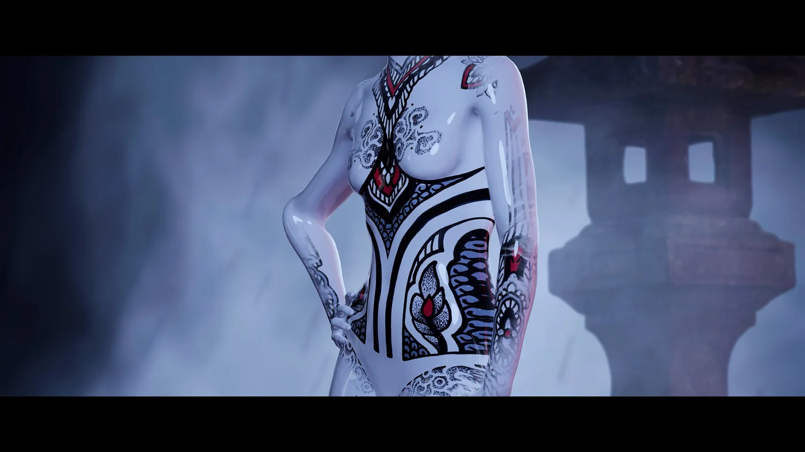
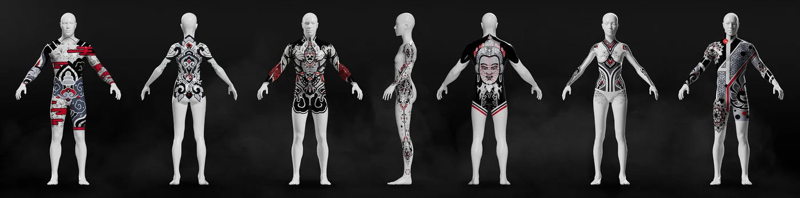
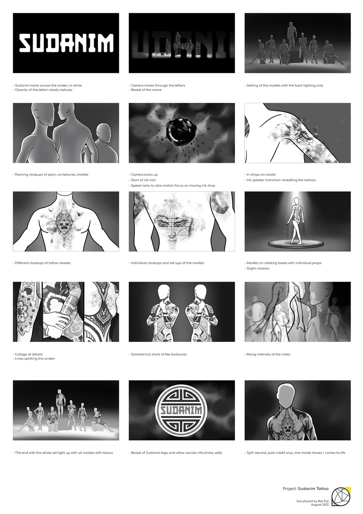

CGI showcase 2022
SUDANIM Tattoo Showcase Part 1
- Tattoo designs
- SUDANIM
- Direction, animation and editing
- Rok Pat
- Original music
- Ilya Onchev (The2iO)
Rok staged SUDANIM’s tattoo designs on digital mannequins, using cinematic lighting and movement to bring the patterns into focus.
The animation was built in Unreal Engine 5 with Quixel assets and MetaHuman figures, with preparation and post-production in Adobe Creative Cloud.





